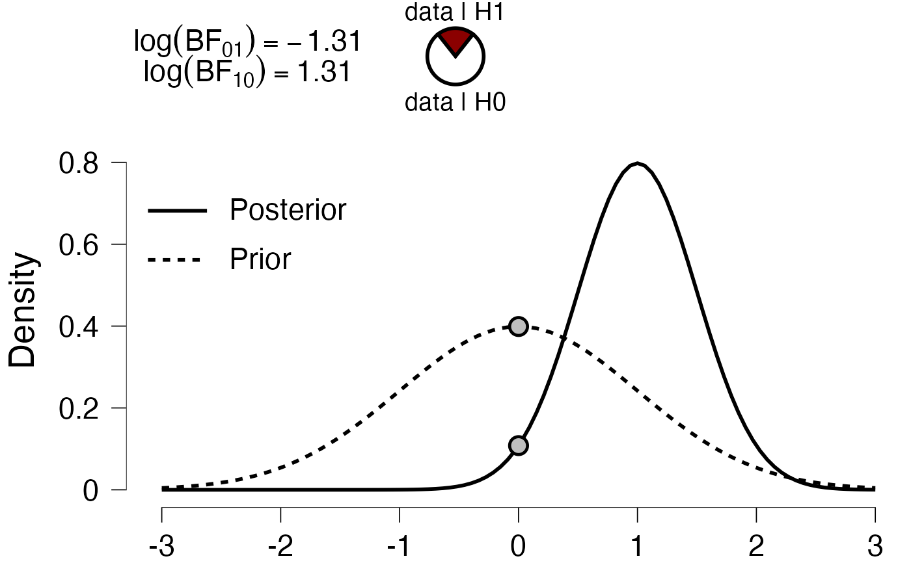
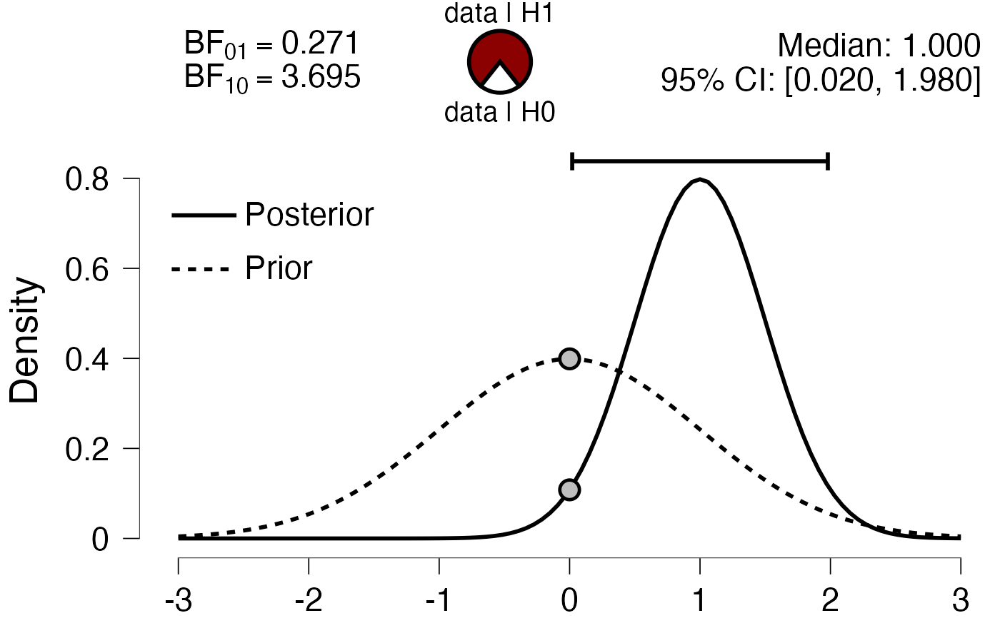

Create a prior-posterior plot.
PlotPriorAndPosterior.RdCreate a prior-posterior plot.
PlotPriorAndPosterior( dfLines, dfPoints = NULL, BF = NULL, CRI = NULL, median = NULL, xName = NULL, yName = gettext("Density", domain = "R-jaspGraphs"), drawPizzaTxt = !is.null(BF), drawCRItxt = !is.null(CRI), bfType = c("BF01", "BF10", "LogBF10"), hypothesis = c("equal", "smaller", "greater"), bfSubscripts = NULL, pizzaTxt = hypothesis2BFtxt(hypothesis)$pizzaTxt, bty = list(type = "n", ldwX = 0.5, lwdY = 0.5), lineColors = NULL, CRItxt = "95% CI: ", medianTxt = gettext("Median:", domain = "R-jaspGraphs"), ... )
Arguments
| dfLines | A dataframe with |
|---|---|
| dfPoints | A dataframe with |
| BF | Numeric, with value of Bayes factor. This MUST correspond to bfType. |
| CRI | Numeric of length 2, Credible interval of posterior. |
| median | Numeric, median of posterior. |
| xName | String or expression, displayed on the x-axis. |
| yName | String or expression, displayed on the y-axis. |
| drawPizzaTxt | Logical, should there be text above and below the pizza plot? |
| drawCRItxt | Logical, should the credible interval be displayed in text? |
| bfType | String, what is the type of BF? Options are "BF01", "BF10", or "LogBF10". |
| hypothesis | String, what was the hypothesis? Options are "equal", "smaller", or "greater". |
| bfSubscripts | String, manually specify the BF labels. |
| pizzaTxt | String vector of length 2, text to be drawn above and below pizza plot. |
| bty | List of three elements. Type specifies the box type, ldwX the width of the x-axis, lwdY the width of the y-axis. |
| lineColors | NULL to omit line colors, a character vector with colors, or any other value to add |
| CRItxt | String, display the credible interval as |
| medianTxt | String, display the median as |
| ... | Unused. |
Value
If BF, CRI, and median are all NULL a ggplot, otherwise a gtable.
Examples
n <- 100 x <- seq(-3, 3, length.out = n) dfLines <- data.frame( x = x, y = c(dnorm(x, 0, 1), dnorm(x, 1, .5)), g = rep(c("Prior", "Posterior"), each = n) ) PlotPriorAndPosterior(dfLines) #> Warning: `themeJasp()` was deprecated in jaspGraphs 0.5.2.6. #> Please use `themeJaspRaw()` instead. #> This warning is displayed once every 8 hours. #> Call `lifecycle::last_lifecycle_warnings()` to see where this warning was generated. dfPoints <- data.frame( x = c(0, 0), y = dnorm(0, c(0, 1), c(1, .5)), g = c("Prior", "Posterior") ) PlotPriorAndPosterior(dfLines, dfPoints) # add BF pizza BF10 <- dnorm(0, 1, .5) / dnorm(0, 0, 1) PlotPriorAndPosterior(dfLines, dfPoints, BF10, bfType = "BF10") # default PlotPriorAndPosterior(dfLines, dfPoints, 1 / BF10, bfType = "BF01") PlotPriorAndPosterior(dfLines, dfPoints, log(BF10), bfType = "LogBF10")  # change hypothesis PlotPriorAndPosterior(dfLines, dfPoints, BF10, hypothesis = "smaller") PlotPriorAndPosterior(dfLines, dfPoints, BF10, hypothesis = "greater") # add credible interval CRI <- qnorm(c(0.025, 0.975), 1, .5) PlotPriorAndPosterior(dfLines, dfPoints, CRI = CRI) PlotPriorAndPosterior(dfLines, dfPoints, CRI = CRI, drawCRItxt = FALSE) # add median median <- qnorm(0.5, 1, .5) PlotPriorAndPosterior(dfLines, dfPoints, median = median)# or combine them all PlotPriorAndPosterior(dfLines, dfPoints, BF10, CRI = CRI, median = median) 